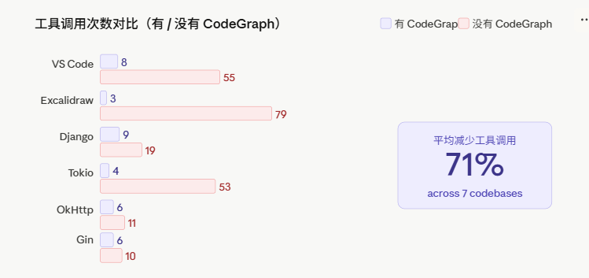
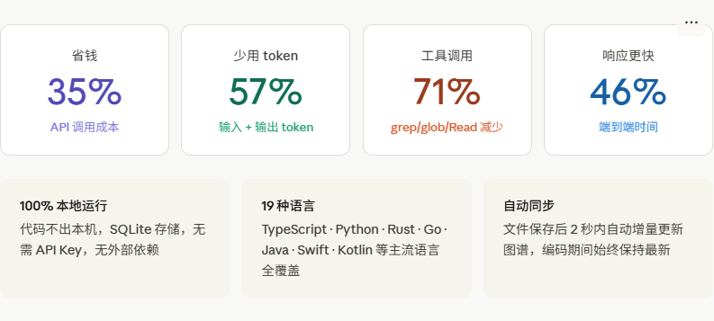
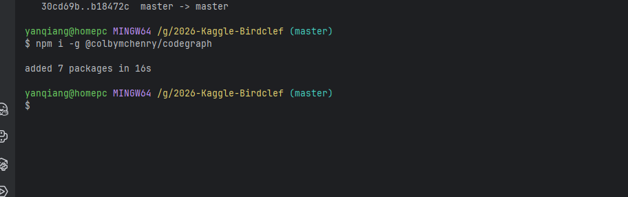
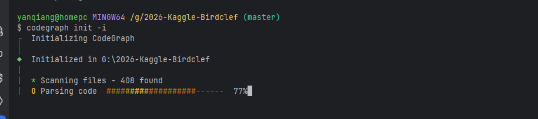
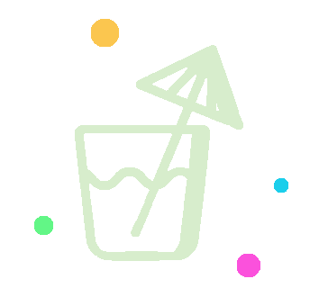

CodeGraph：给 Claude Code 装上"代码地图"，Token 直降 35%
用过 Claude Code 的人应该都有这个体验——让它分析一个稍微大点的项目，它就开始疯狂调用 grep、glob、Read，一个架构问题下去，几十个工具调用跑完，token 哗哗地流走了，钱包也跟着疼。
这个项目叫 CodeGraph，专门针对这个问题设计的。

项目地址：github.com/colbymchenry/codegraph，MIT 协议，感兴趣直接去试。
问题出在哪？
Claude Code 在探索陌生项目的时候，会先派出"探索子 Agent"，靠 grep / glob / Read 一通扫文件，把有用没用的内容全往 context 里塞，才能开始正儿八经干活。项目越大，这个"探索税"就越贵。
举个例子：让 Agent 跑一遍"认证请求从 API 网关到数据库层的完整链路"这个问题，在一个 4000 个文件的后端项目里，不用 CodeGraph 的话，光发现阶段就要触发 40+ 次工具调用。
CodeGraph 的思路是：把这个探索过程提前做完、存起来，Agent 来了直接查图，不用再到处乱翻。

原理是什么？

整体分三层：
第一层：用 tree-sitter 解析代码
tree-sitter 是很多现代编辑器背后用的 AST 解析器，CodeGraph 用它把代码解析成结构化数据——函数定义、类继承、调用关系、import 链路全都提取出来。这个过程是确定性的，从 AST 来的，不是靠大模型瞎猜，所以准确。
第二层：存进本地 SQLite
所有数据存在项目目录下的 .codegraph/ 里，开启了 FTS5 全文检索，符号查询和关系遍历都很快。没有云端依赖，不联网，数据不出本机。
第三层：通过 MCP 接入 Agent
CodeGraph 以 MCP Server 的形式跑起来，对外暴露工具接口。Agent 用 codegraph_context 定位目标区域，用 codegraph_explore 深入看具体符号，通常两三个调用就能搞定，连文件都不用打开。
另外 MCP Server 在后台挂着文件监听，代码有改动自动增量同步，不需要手动维护。
┌───────────────────────────────┐
│ Claude Code │
│ 直接调 CodeGraph，不派子 Agent │
│ │ │
└───────────────┼───────────────┘
▼
┌───────────────────────────────┐
│ CodeGraph MCP Server │
│ context · trace · callers │
│ │ │
│ SQLite 知识图谱 │
│ 符号 · 边 · 文件 · FTS5 │
└───────────────────────────────┘
跑分结果
CodeGraph 在 7 个真实开源项目上做了对比测试，覆盖 7 种语言，方法是让 Claude Code（headless 模式，Opus 4.7）针对每个项目回答一个架构问题，有 CodeGraph 和没有各跑 4 次，取中位数。 
平均结论：便宜 35%，token 少 57%，快 46%，工具调用减少 71%
能看出来，项目越大收益越明显，Tokio（Rust）直接便宜了 82%。Gin 只有 150 个文件，本来 grep 搜索就快，优势就没那么突出了。 
怎么装？
第一步：安装
# macOS / Linux
curl -fsSL https://raw.githubusercontent.com/colbymchenry/codegraph/main/install.sh | sh
# Windows
irm https://raw.githubusercontent.com/colbymchenry/codegraph/main/install.ps1 | iex
# 有 Node 的话直接 npm
npx @colbymchenry/codegraph
npm i -g @colbymchenry/codegraph
第二步：注册 MCP Server
codegraph install
这一步会自动把 MCP Server 配置写入 Claude Code、Cursor、Codex CLI 这些 Agent 的配置文件里，支持哪个就配哪个。手动配也可以：
{
"mcpServers": {
"codegraph": {
"command": "codegraph",
"args": ["serve", "--mcp"]
}
}
}
第三步：初始化项目
cd your-project
codegraph init -i
它会用 tree-sitter 解析整个项目，建出 SQLite 知识图谱。大多数项目几秒到几分钟搞定。完成后 Claude Code 会主动提示"是否要用 CodeGraph 回答问题"——这个提示出现说明 MCP Server 已经连上了。
确认有没有真的在用
装完之后有个常见坑：看着配置好了，但 Agent 其实没在调用 CodeGraph。可以这样验证：
在项目目录跑 codegraph status，确认Backend: native，并且索引的 symbol 数量不为 0。显示Backend: wasm说明 SQLite 原生绑定没加载上，性能会慢 5-10 倍。看 Agent 的工具调用日志，正常情况下早期应该出现 codegraph_context或codegraph_explore。如果全是 grep/glob/Read，说明 MCP Server 没接上。同一个问题开不开 CodeGraph 分别跑一次，大项目上 token 和时间应该都有明显下降。
如何使用


自动检测Claude Code或者Codex，全局安装
codegraph install --yes # auto-detect agents, install global

查看mcp是否存在
/mcp

支持哪些语言？
TypeScript、JavaScript、Python、Go、Rust、Java、C#、PHP、Ruby、C、C++、Swift、Kotlin、Scala、Dart、Svelte、Vue、Lua、Pascal/Delphi，19 种以上，大多数主流项目都覆盖到了。
框架级别的路由也支持识别，包括 Django、Flask、FastAPI、Express、NestJS、Laravel、Rails、Spring、Gin、Axum、ASP.NET、React Router 等，可以直接从 URL 路由追到对应的 handler 函数。
适合什么场景，不适合什么场景
适合：
项目有几百到几千个文件，探索成本高 每天跑多次 AI coding session，成本累积很快 团队共享项目，把 .codegraph/提交到 git，所有人直接受益经常需要理解架构、import 链、继承关系这类跨文件问题
不太适合：
文件改动频繁的 Monorepo，同步开销可能抵消收益 要理解运行时行为、性能热点、动态调用这类静态分析拿不到的问题 项目本身很小，原生搜索本来就快 已经有完善的 CLAUDE.md 覆盖大部分上下文的情况（当然两个配合用效果更好）


如果你觉得这篇文章对你有帮助，别忘了点个赞、送个喜欢
>/ 作者：ChallengeHub小编
>/ 作者：欢迎转载，标注来源即可